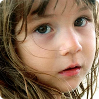

直播简介
开播时间：2018-04-21 16:21
茶是天之灵物，地之仙骨，健康之饮！中国茶道是制茶泡茶的技术之道，是传承文明的礼仪之道，更是怡养心灵的修身之道。通过对茶道的历史文化和茶叶科学知识教学，让人们对“茶道”有个正确认识和理解。初步了解选水择器、茶叶泡饮、茶道礼仪等基本技术规范，同时引导审美情趣，树立积极向上的人生态度……
更多
主讲人简介

主讲人： 张筱雨
单 位： 湖南农业大学农业科学研究院
简 介： 主讲国家级精品公开视频课《中国茶道》，主编 《中国茶道》，著有《中国茶美学研究—唐宋茶美学思 想与中国当代茶美学建设》。
手机端观看并互动
扫描二维码
下载超星学习通
“学习通”右上角
扫描进入直播页面
想要带走更多直播内容，请在学习通右上角输入"xxk"，收藏尔雅选修课页面，随时随地，掌握优质课程资源。